REAR DIFFERENTIAL CARRIER ASSEMBLY (for LSD) > DISASSEMBLY |
| 1. INSPECT RUNOUT OF REAR DRIVE PINION COMPANION FLANGE |
 |
Using a dial indicator, measure the runout of the companion flange vertically and laterally.
| Runout | Specified Condition |
| Vertical runout | 0.10 mm (0.00394 in.) |
| Lateral runout | 0.10 mm (0.00394 in.) |
| 2. INSPECT RUNOUT OF DIFFERENTIAL RING GEAR |
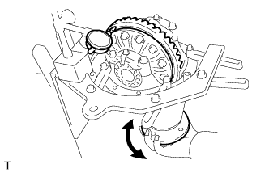 |
Using a dial indicator, measure the ring gear runout.
| 3. INSPECT DIFFERENTIAL RING GEAR BACKLASH |
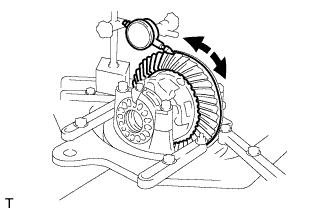 |
Using a dial indicator, measure the ring gear backlash.
| 4. REMOVE DRIVE PINION COMPANION FLANGE REAR NUT |
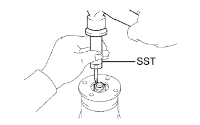 |
Using SST and a hammer, unstake the nut.
 |
Using SST to hold the flange, remove the nut.
| 5. REMOVE REAR DRIVE PINION REAR COMPANION FLANGE SUB-ASSEMBLY |
 |
Using SST, remove the companion flange.
| 6. REMOVE REAR DIFFERENTIAL CARRIER OIL SEAL |
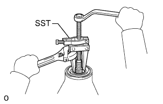 |
Using SST, remove the oil seal from the differential carrier.
| 7. REMOVE REAR DIFFERENTIAL DRIVE PINION OIL SLINGER |
| 8. REMOVE REAR DRIVE PINION FRONT TAPERED ROLLER BEARING |
 |
Using SST, remove the front bearing (inner race) from the drive pinion.
| 9. REMOVE REAR DIFFERENTIAL BEARING ADJUSTING NUT LOCK |
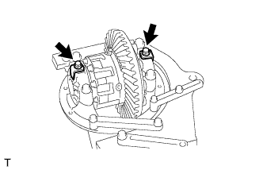 |
Remove the 2 bolts and 2 adjusting nut locks.
| 10. REMOVE DIFFERENTIAL CASE ASSEMBLY |
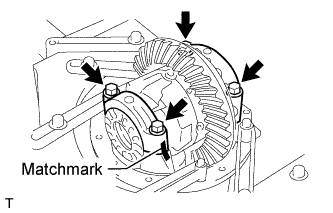 |
Place matchmarks on the bearing caps and differential carrier.
Remove the 4 bolts, 2 bearing caps, 2 adjusting nuts and 2 bearings (outer race).
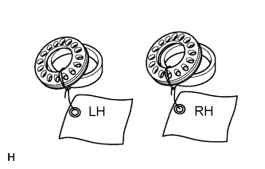 |
Remove the differential case from the differential carrier.
| 11. REMOVE DIFFERENTIAL DRIVE PINION |
Remove the differential drive pinion from the differential carrier.
| 12. REMOVE REAR DIFFERENTIAL DRIVE PINION BEARING SPACER |
| 13. REMOVE REAR DRIVE PINION REAR TAPERED ROLLER BEARING |
 |
Using SST and a press, press out the bearing (inner race).
| 14. REMOVE REAR DIFFERENTIAL DRIVE PINION PLATE WASHER |
| 15. REMOVE REAR DRIVE PINION FRONT TAPERED ROLLER BEARING |
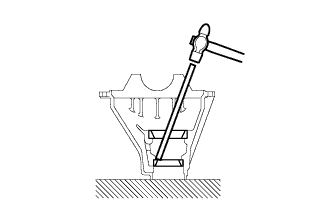 |
Using a brass bar and hammer, tap out the bearing (outer race).
| 16. REMOVE REAR DRIVE PINION REAR TAPERED ROLLER BEARING |
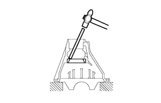 |
Using a brass bar and hammer, tap out the bearing (outer race).
| 17. REMOVE DIFFERENTIAL RING GEAR |
 |
Place matchmarks on the ring gear and differential case.
Remove the 12 ring gear set bolts.
Using a plastic-faced hammer, tap on the ring gear to separate it from the differential case.
| 18. INSPECT RUNOUT OF DIFFERENTIAL CASE |
Install the differential case to the differential carrier.
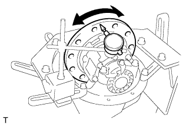 |
Using a dial indicator, measure the differential case runout.
Remove the differential case from the differential carrier.
| 19. REMOVE REAR DIFFERENTIAL CASE BEARING |
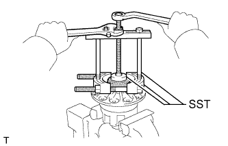 |
Using SST, remove the 2 side bearings (inner race) from the differential case.
| 20. DISASSEMBLE DIFFERENTIAL CASE |
 |
Place matchmarks on the differential case LH and RH.
Remove the 8 bolts uniformly, a little at a time.
Using a plastic-faced hammer, separate the differential case LH and RH.
Remove the 2 side gears, 6 side gear thrust washers, 4 clutch plates, 2 spring retainers, compression spring, 4 pinion gears, 4 pinion gear thrust washers and spider from the differential case.
| 21. INSPECT REAR DIFFERENTIAL SIDE GEAR THRUST WASHER |
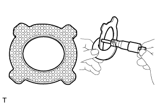 |
Using a micrometer, check that the thickness of the thrust washer is even.
Visually check the thrust washer.
If bare metal is showing, replace the thrust washer.
| 22. INSPECT CLUTCH PLATE |
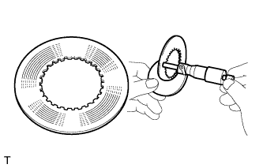 |
Using a micrometer, check that the thickness of the clutch plate is even.
| 23. INSPECT COMPRESSION SPRING |
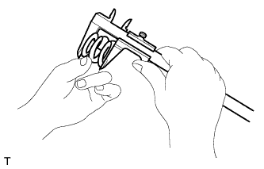 |
Using vernier caliper, measure the free length of the spring.